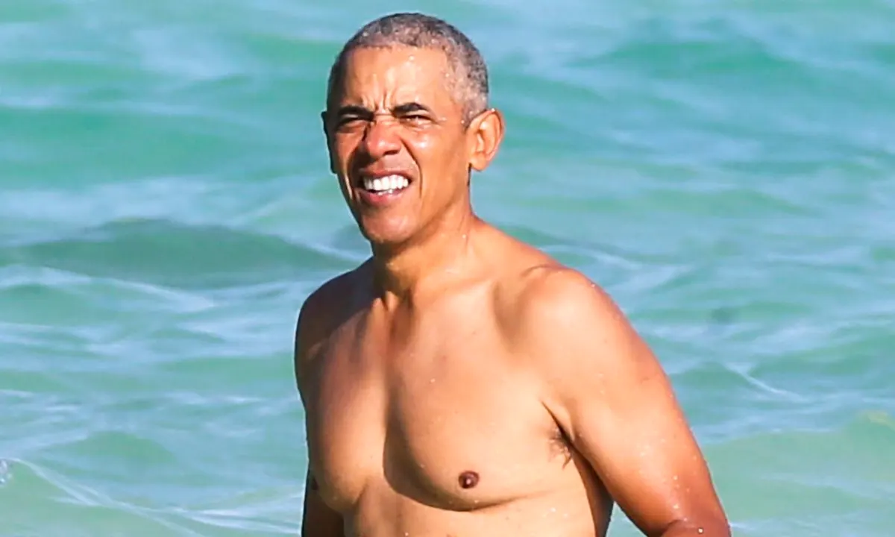

Barack Obama's Importance
Barack Obama was the 44th president of the United States, serving from 2009 to 2017. He was the first African American to hold the office of the presidency, which was a historic achievement for African Americans and the nation as a whole.

Obama's Achievements

Obama's Legacy
Barack Obama's presidency was a historic moment for African American history. He showed that anyone, regardless of their race or background, could become the leader of the free world. He inspired millions of people, particularly African Americans, to believe in the power of their dreams and to pursue them with passion and dedication. His legacy continues to inspire future generations of leaders and activists.
